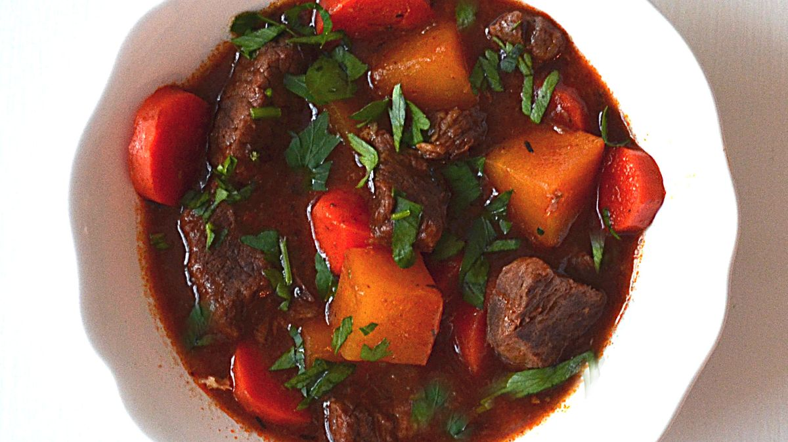

Go back to home
Rutabaga Beef Stew
Rutabaga is a root vegetable and can be fitted with a beef chuck roast. So that this stew, even though it's rare to see this kind of food served in our restaurant, is also a hearty and comforting for any night of the week. Hope you like it!

Ingredients
- 1 pound boneless beef chuck roast, trimmed
- 1/2 teaspoon salt
- 2 tablespons vegetable oil
- 2 cups cubed rutabaga
- 1 medium onion, cut into thin wedges
- 4 carrots, cut diagonally into 1-inch pieces
How we do it:
- Cut beef chuck roast into 3/4-inch pieces
- Toss together beef, flour, and 1/4 teaspoon each salt and pepper in a bowl until coated
- Heat oil in a large pot over medium-high heat
- Add meat and cook until browned
- Stir everything with remaining salt and pepper
- Bring to a boil
- Simmer until meat and vegetables are tender
See previous recipe
See next recipe